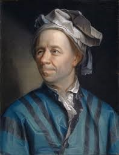
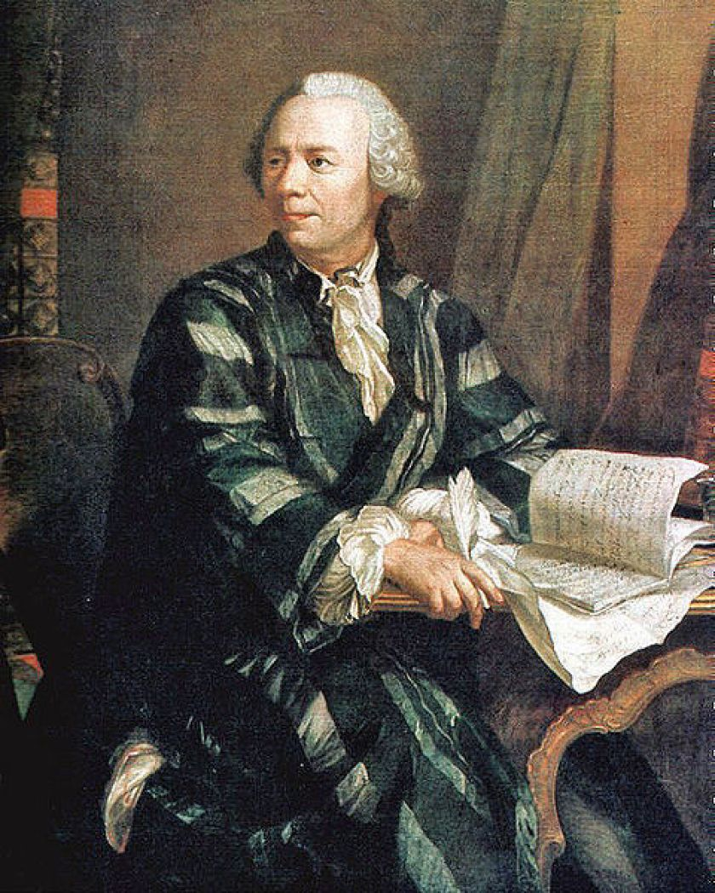
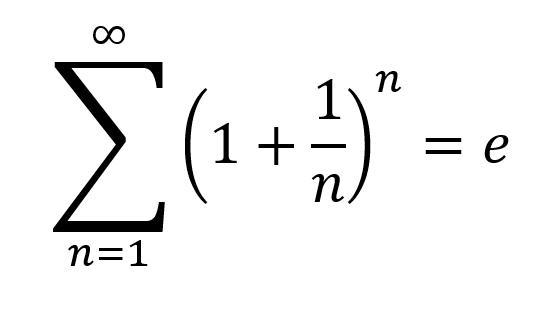
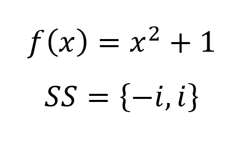
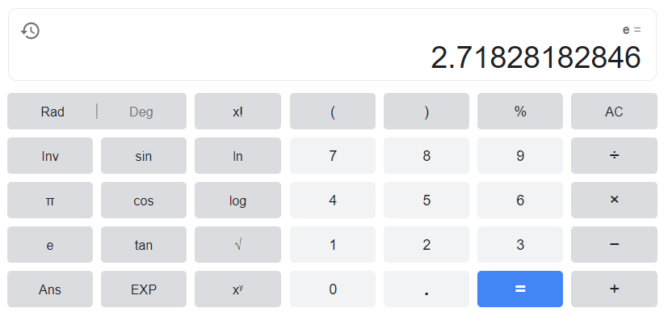
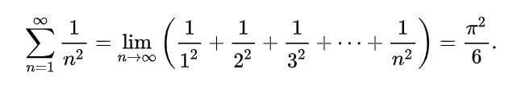
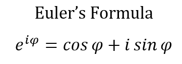
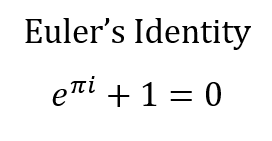
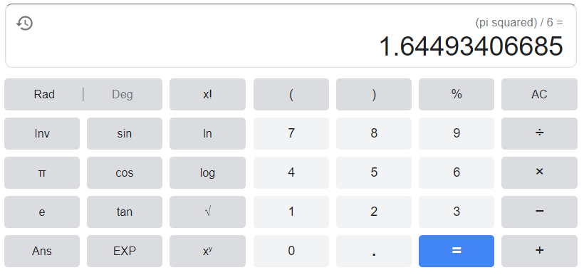

MATHS TERM PROJECT
The life of a mathematician,
Leonhard Euler

Student: Berk Erdemoğlu
Teacher: Elvin Nilay Semiz
Class & No: 11-G 1120
THE LIFE OF EULER: THE FOUNDER OF PURE MATHEMATICS
- A Swiss mathematician, Leonhard Euler was born in Basel on April 15th, 1707. He has made irrefutable contributions to many topics of mathematics, ranging from trigonometry to analytic geometry, from geometry to calculus and number theory.
- He got help from Jacob Bernoulli, a renowned mathematician and a physicist in his younger days as he completed his studies at the University of Basel in 1726.
- In an archive of Euler’s works, he has over 800 writings, some notable ones being Mechanica, Introductio in analysin infinitorum and Elements of Algebra.

HIS CONTRIBUTIONS
Mathematical notation is the way mathematical operators are written to make a universal convention.
- He introduced to notation used to describe a function, f(𝑥) along with the idea of a function.
- He is credited with the invention of using i to denote √-1, the imaginary unit.
- He used e for the base of the natural logarithm. He did not use e for his last name’s first letter but it was a mere coincidence.
- He invented the notation of trigonometric functions that we use, such as sin and cos.


Calculating Euler's Number, e

Analysis is a branch of mathematics which is concerned with limits, differentiation, integration, infinite series, measure and analytic functions.
- Euler's main subject of work was calculus, as he used and developed power series to solve most of his problems. He expressed some functions as sums of infinitely many terms (series).
- He proved the power series expansions for e and the inverse tangent function (tan-1). He also used power series to solve the Basel Problem in 1735. He proved that the solution to the Basel Problem is exactly π^2/6 (Pi squared over 6).
- He broadened the range of applications of logarithms by using them in analytic proofs and developing ways to express logarithmic functions using power series.
- In 1748 he published the famous Euler's formula and the even more famous Euler's Identity, which contains the important constants of maths, e, π, i, 0 and 1, and uses addition, multiplication, exponents and the equality symbol. A great physicist, Richard Feynman, called it the "most remarkable formula in mathematics". It was also voted the most beautiful theorem in mathematics in 1988, in a poll by The Mathematical Intelligencer.
- Euler also introduced the gamma function and a method for solving quartic equations (4th degree equations).
- He proved that there are infinitely many prime numbers by using harmonic series. Thanks to him, the Prime Number Theorem was developed by future mathematicians.



Calculating the solution to the Basel Problem

Number theory is the study of the set of natural numbers. It studies the relationship between different types (e.g odd, even, etc.) of numbers.
- He proved the divergence of the sum of reciprocals of primes (meaning that the series does not get closer to a value as it progresses).
- He invented Euler's totient function, represented as φ(n). The function is equal to the number of natural numbers less than or equal to the input, n, which is also an integer, that are coprime to n. This function has a use in cryptography, specifically in RSA.
- Euler mainly worked on Pierre de Fermat's work in number theory.
- He proved that the product of two sums of four squares is also a sum of four squares. Even though it has no real application, one must remember that Euler was mainly interested in pure mathematics.
Applied mathematics is a field of study that involves the application of mathematics to real life problems in the world of science, engineering, etc.
- As stated before, the constant, e is very important in many fields. For example, in finance, it is used to calculate compound interest (one definition of the constant comes from compound interest). In calculus, the constant can be defined as the limit of (1 + 1/n)n, and one thing about the function, f(x) = ex, is that its derivative is equal to itself. The number is also the base of the natural logarithm.
- He introduced the Euler-Mascheroni constant, which is used in the definition of the cosine integral, in quantum field theory, in the regularization of the harmonic series as a finite value, it appears in the product formula for the gamma function, etc.
- He developed a formula for the difference between an integral and a closely related sum, which can be used to approximate an integral. He used it to help prove the Basel Problem. It is also used to approximate integrals and sums involving a polynomial.
Physics is a study of how the universe behaves and tries to explain why. Astronomy is a subbranch of physics which studies the motion of and interaction between celestial bodies.
- Euler's work in astronomy earned him multiple Paris Academy Prizes. He determined the orbits of celestial bodies (especially comets), he studied the nature of comets, and he calculated the parallax of the Sun. Accurate longitude tables were developed thanks to his contributions and calculations.
- He helped develop a cornerstone of engineering, the Euler-Bernoulli beam theory. It is mainly based on the assumption that plane sections of a beam remain plane and perpendicular to the normal (neutral axis).
- Another field of study in physics he contributed to was optics. He disagreed with Newton's corpuscular theory of light (which states that light is made up of small bodies) and instead supported Huygens' wave theory of light (which states that light is made up of waves). Both parties were eventually disproved as the quantum theory of light (dual nature of light, it actually behaves both as a particle and wave) was proved.
- He also published works on engineering, and one was a set of differential equations for inviscid flow (where viscosity of the fluid is 0).
Logic is a field of mathematics which uses a set of principles to reason something.
- Euler used closed curves to reason syllogistically. They came to be known as Euler diagrams. It is used to represent sets and their relationships.
- The Euler Diagram were eventually refined into the Venn Diagram in the 1880s by John Venn.
- An Euler Diagram only shows existing relationships between sets while a Venn Diagram shows every possible relationship. In a Venn Diagram, one must show every intersection, even if it's empty, between the sets, but; in an Euler Diagram, one only shows non-empty intersections.
Additional Notes
- Euler's studies also span music, as he attempted to introduce mathmatics to music and tried to generalize music using mathematics. His work was seen as either too mathematical for a musician to understand or too musical for a mathematician to understand, so they weren't considered important by others.
- He was a devout Christian as some of his works and his letters show. He wrote apologetics and argued with atheists.
- Numerous things have been named after him, namely an asteroid in 2002, Euler's constant, e (he did not name it himself), his many equations and theorems were also named after him. He was also featured on the Swiss 10 Franc banknote.